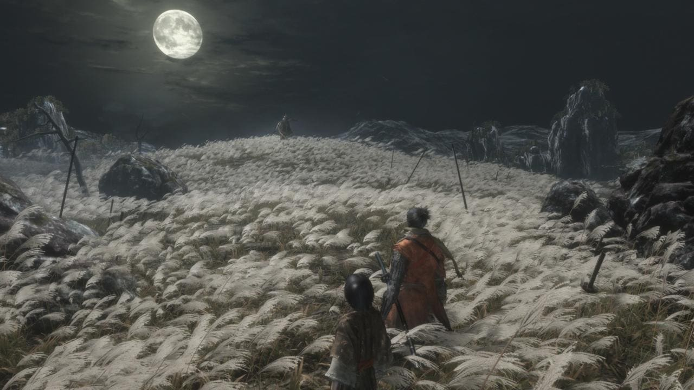

Sekiro: Shadows Die Twice
Nhà sản xuất: FromSoftware
Điểm: 9.5/10
Thể loại: Hành động, Phiêu lưu
Năm phát hành: 2019
Mô tả: Một trò chơi hành động phiêu lưu với cơ chế chiến đấu độc đáo, nơi người chơi vào vai một ninja trong cuộc chiến chống lại kẻ thù. Lấy bối cảnh tại Nhật Bản thời Sengoku, bạn sẽ vào vai Wolf - một shinobi được giao nhiệm vụ bảo vệ một vị chủ nhân trẻ tuổi. Với cơ chế chiến đấu tập trung vào việc phá thế thủ của đối phương và những pha phản đòn đẹp mắt, Sekiro mang đến trải nghiệm chiến đấu căng thẳng và đầy thử thách.
Đặc điểm nổi bật: Cơ chế chiến đấu căng thẳng, đồ họa tuyệt đẹp, và cốt truyện sâu sắc.
Cấu hình tối thiểu:
- HĐH: Windows 7 SP1 64-bit
- CPU: Intel Core i3-2100 hoặc AMD FX-6300
- RAM: 4GB
- GPU: NVIDIA GeForce GTX 760 hoặc AMD Radeon HD 7950
- Dung lượng: 25GB
Cấu hình đề nghị:
- HĐH: Windows 10 64-bit
- CPU: Intel Core i5-4460 hoặc AMD Ryzen 5 1400
- RAM: 8GB
- GPU: NVIDIA GeForce GTX 970 hoặc AMD Radeon RX 570
- Dung lượng: 25GB